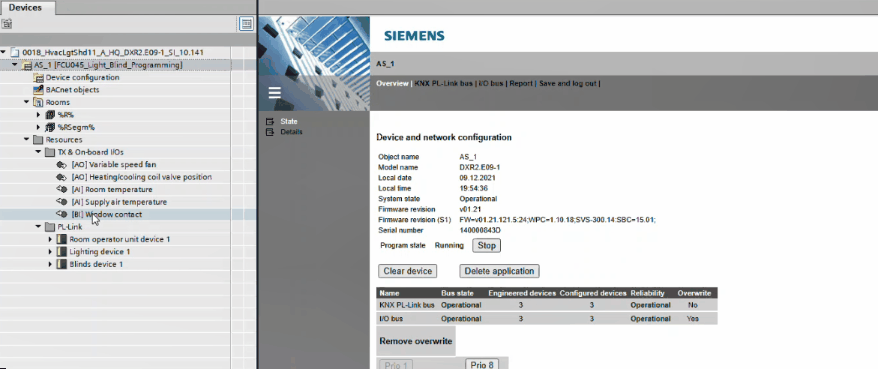

使用 Room 编程编辑器上网
您可以使用以下方式从任何视图上网Go online工具栏中的按钮或选择Show in program在上下文菜单中。上下文菜单项可用于任何应用程序函数、I/O 或数据点。该命令将直接跳转到图表中的元素。

Go online with the chart
- Open the Room programming editor.
Duplicating and programming - Select an application function, I/O or data point in the Project navigation view.
- Right-click the element and select Show in program.
- The command will jump directly to the element in the chart.
- In the toolbar, select the Monitoring on/off button.
- You can now monitor online values. Mouse over a data point to see its current live value.
Go online with the room segment editor
- Open the Room programming editor.
Duplicating and programming - In the toolbar, select the Go online button.
- The frame color changes to orange, and the table in the Room segment editor now displays live values.